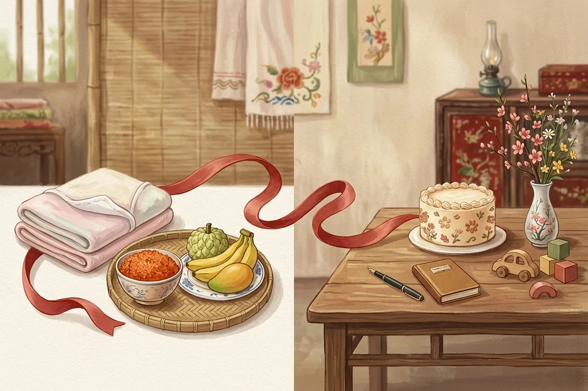

Thôi nôi là lễ mừng bé tròn một tuổi theo âm lịch, còn gọi là đầy năm, đánh dấu bé “thôi nằm nôi”, tạ ơn 12 Bà Mụ và báo với tổ tiên. Lễ này khác đầy tháng ở mốc thời gian (1 năm so với 1 tháng), số khách mời và nghi thức bốc đồ đoán nghề. Ngày thôi nôi tính từ ngày sinh âm lịch của bé; có nơi lùi 1–2 ngày tuỳ bé trai hay bé gái, còn bé sinh tháng 6 nhuận năm 2025 thì cúng vào tháng 6 âm năm 2026. Phần dưới đi lần lượt: định nghĩa, so sánh, cách tính từng bước, trường hợp tháng nhuận, bảng tra sẵn và các nghi thức trong ngày.
- Mâm cúng đầy tháng cho bé — lễ vật, văn khấn và cách tính ngày đầy tháng
- Bốc đồ thôi nôi gồm những gì — ý nghĩa từng món và lưu ý an toàn
- Thiệp mời thôi nôi online — mẫu có ảnh bé, bản đồ và xác nhận tham dự
Thôi nôi là gì? Vì sao gọi là “thôi nôi”?
Thôi nôi là lễ mừng bé tròn 12 tháng tuổi theo âm lịch. “Thôi nôi” nghĩa là thôi nằm nôi: bé chuyển sang giai đoạn bò, đứng và tập đi. Lễ còn gọi là đầy năm, tương đương sinh nhật đầu tiên của bé.
Cụ thể, bài thôi nôi (đầy năm) trên Wikipedia tiếng Việt mô tả đây là phong tục lâu đời của người Việt: bé đủ 12 tháng thì không nằm nôi nữa. Cùng nguồn này ghi lễ vừa cảm ơn các Bà Mụ, vừa cầu an lành cho bé. Nghi thức cúng bái thay đổi theo tập quán từng vùng — đó cũng là lý do mỗi nhà làm một kiểu.
Thôi nôi = đầy năm = sinh nhật 1 tuổi tính theo lịch âm, có phần cúng Mụ và gia tiên.
Ý nghĩa: tạ ơn Bà Mụ, báo gia tiên, ra mắt họ hàng
Lễ đầy năm mang 3 ý nghĩa, gồm tạ ơn, báo cáo và ra mắt. Thứ nhất, gia đình tạ ơn 12 Bà Mụ — theo tín ngưỡng dân gian, đây là 12 vị nữ thần nặn hình hài đứa trẻ và trông coi việc mang thai, sinh nở, nuôi con. Nhà nghiên cứu Nguyễn Đổng Chi kể sự tích 12 Bà Mụ trong sách Lược khảo về thần thoại Việt Nam (1956). Thứ hai, bố mẹ thắp hương báo với tổ tiên rằng bé đã qua năm đầu khoẻ mạnh. Thứ ba, ông bà, họ hàng nội ngoại và khách mời đến chúc phúc, tặng quà cho bé.
Thôi nôi còn gọi là gì?
Ngoài “thôi nôi”, lễ này có tên “đầy năm” (Wikipedia, mục Thôi nôi) hoặc “đầy tuổi” trong cách nói của nhiều gia đình. Tiếng Anh dịch là first birthday. Dù tên gọi khác nhau, cả ba đều chỉ chung một mốc: bé tròn 1 tuổi.
Thôi nôi có phải là sinh nhật 1 tuổi không?
Có — về mốc thời gian, thôi nôi chính là sinh nhật 1 tuổi. Điểm khác nằm ở cách tính và phần lễ: lễ truyền thống tính theo ngày âm và có cúng Mụ, còn sinh nhật 1 tuổi kiểu hiện đại tính theo ngày dương và chỉ có tiệc, bánh kem. Vì cùng một mốc nhưng khác nghi thức, câu hỏi tiếp theo của nhiều bố mẹ là lễ này khác đầy tháng ở đâu.
Thôi nôi khác đầy tháng thế nào?
Đầy tháng mừng bé tròn 1 tháng, chủ yếu cúng Mụ và mời người thân. Thôi nôi mừng bé tròn 1 năm, vẫn cúng Mụ nhưng có thêm bốc đồ đoán nghề và mời khách đông hơn.

Thực ra, thôi nôi và đầy tháng chỉ là 2 trong 4 mốc cúng Mụ. Theo Wikipedia (mục Bà Mụ), lễ cúng Mụ diễn ra vào các mốc đầy cữ (3 ngày sau sinh), đầy tháng, đầy tuổi tôi (100 ngày) và thôi nôi (tròn 1 năm). Bảng dưới đặt 4 mốc cạnh nhau để bạn thấy lễ đầy năm nằm ở đâu.
| Mốc | Thời điểm | Khách mời | Nghi thức chính |
|---|---|---|---|
| Đầy cữ | 3 ngày sau sinh (Wikipedia); có nơi tính theo nếp riêng | Trong nhà | Cúng Mụ |
| Đầy tháng | Tròn 1 tháng âm | Người thân hai bên | Cúng Mụ, ra mắt người thân |
| Đầy tuổi tôi | 100 ngày sau sinh | Người thân | Cúng Mụ |
| Thôi nôi (đầy năm) | Tròn 1 năm âm | Họ hàng, bạn bè bố mẹ | Cúng Mụ, bốc đồ đoán nghề, tiệc mừng |
Nhìn bảng, bạn thấy mâm cúng tròn năm kế thừa gần như nguyên khung của lễ cúng đầy tháng. Phần mới là bàn bốc đồ và danh sách khách dài hơn. Danh sách khách dài hơn kéo theo một việc phải làm sớm: chốt ngày chính xác để in lên thiệp.
Cách tính ngày thôi nôi cho bé trai, bé gái
Để tính ngày thôi nôi, lấy ngày sinh âm lịch của bé rồi cộng đúng 1 năm âm lịch. Có nơi lùi 1 ngày với bé trai và 2 ngày với bé gái; có nơi tính khác hoặc giữ đúng ngày. Hỏi nếp nhà nội trước khi chốt.
3 bước tính ngày cúng tròn năm
- Đổi ngày sinh dương lịch của bé sang âm lịch. Ghi cả tháng có phải tháng nhuận hay không.
- Cộng 1 năm âm lịch, giữ nguyên ngày và tháng. Ví dụ bé sinh 23/9 năm Ất Tỵ thì mốc tròn năm là 23/9 năm Bính Ngọ.
- Áp quy ước lùi ngày của gia đình, rồi đổi lại ngày dương để in thiệp. Khách đọc thiệp theo lịch dương, nên ghi cả hai.
Các quy ước lùi ngày đang tồn tại
Đây là chỗ các trang hướng dẫn nói ngược nhau nhiều nhất. Bảng dưới liệt kê từng quy ước kèm nơi ghi lại, không chọn cách nào làm “chuẩn”.
| Quy ước | Bé trai | Bé gái | Nơi ghi lại |
|---|---|---|---|
| “Trai lùi 1, gái lùi 2” | Trước ngày sinh 1 ngày | Trước ngày sinh 2 ngày | Wikipedia “Thôi nôi” (dẫn VOH); bài cộng đồng Hello Bacsi |
| “Nam trồi 2, nữ sụt 1” | Sau ngày sinh 2 ngày | Trước ngày sinh 1 ngày | Bài cộng đồng Hello Bacsi, giải nghĩa cho lễ đầy tháng; có nơi áp cả cho lễ tròn năm |
| Giữ đúng ngày | Đúng ngày sinh âm | Đúng ngày sinh âm | Cách tính gốc, chưa áp quy ước lùi |
Riêng câu “nam trồi nữ sụt”, bài giải nghĩa trên Hello Bacsi hiểu “trồi” là cộng thêm ngày cho bé trai, “sụt” là trừ bớt ngày cho bé gái. Trong khi đó, một bài khác cùng trang lại dùng cụm này để chỉ “gái lùi 2, trai lùi 1”. Hai cách hiểu cho ra hai ngày khác nhau, vì vậy câu hỏi nên đặt cho bà nội là “nhà mình lùi mấy ngày”, không phải “nam trồi nữ sụt là sao”.
“Mẹ ơi, bé Na sinh ngày 4 tháng Giêng âm. Nhà mình cúng thôi nôi đúng ngày hay lùi ngày ạ? Con định làm tiệc vào Chủ nhật gần đó, mẹ xem giúp con nhé.”— tin nhắn mẫu gửi ông bà trước khi chốt ngày
Ví dụ tính cho 1 bé trai và 1 bé gái
Hai ví dụ dưới tính bằng engine lịch âm Templexa (thuật toán âm lịch Việt Nam, múi giờ +7):
- Bé trai sinh Thứ Tư 12/11/2025 (23/9 năm Ất Tỵ): đúng ngày là Chủ nhật 01/11/2026; lùi 1 ngày là Thứ Bảy 31/10/2026; lùi 2 ngày là Thứ Sáu 30/10/2026.
- Bé gái sinh Thứ Sáu 20/02/2026 (mùng 4 Tết Bính Ngọ): đúng ngày là Thứ Ba 09/02/2027; lùi 1 ngày là Thứ Hai 08/02/2027; lùi 2 ngày là Chủ nhật 07/02/2027 — tức mùng 2 Tết Đinh Mùi.
Ví dụ bé gái cho thấy một điểm ít ai nhắc: bé sinh dịp Tết thì lễ tròn năm cũng rơi vào Tết năm sau. Khách về quê, nhà hàng nghỉ, nên bé sinh quanh Tết cần chốt ngày và gửi thiệp sớm hơn.
Có cần cúng thôi nôi đúng ngày không?
Không bắt buộc. Bài hướng dẫn trên Điện Máy Chợ Lớn ghi rằng lễ trọng tại tâm; nếu cần đổi thì ưu tiên làm sớm 1–3 ngày, còn dời muộn thì chọn một ngày tốt khác theo lịch âm. Có nhà tách đôi: cúng đúng ngày âm buổi sáng, tiệc mời khách dời về cuối tuần gần nhất. Cách tách đôi này gặp khó nhất ở một trường hợp — bé sinh vào tháng nhuận.
Bé sinh tháng nhuận thì tính ngày thôi nôi thế nào?
Năm Ất Tỵ 2025 có tháng 6 nhuận, kéo dài từ 25/07 đến 22/08/2025 dương lịch. Năm 2026 không có tháng nhuận, nên bé sinh trong tháng 6 nhuận cúng thôi nôi vào tháng 6 âm năm 2026, cùng số ngày.
Theo engine lịch âm Templexa, tháng 6 âm năm Bính Ngọ 2026 chạy từ 14/07 đến 12/08/2026 dương lịch. Ví dụ bé sinh Chủ nhật 10/08/2025 là ngày 17 tháng 6 nhuận Ất Tỵ, nên ngày cúng đúng ngày là 17/6 Bính Ngọ, tức Thứ Năm 30/07/2026. Các mốc năm 2026 đã qua, nhưng cách tính dưới đây dùng lại được cho những năm nhuận sau.
Năm nhuận âm lịch là gì?
Năm nhuận âm lịch là năm có 13 tháng. Âm lịch chèn thêm một tháng trùng tên tháng trước nó để bắt kịp năm dương lịch; tháng chèn thêm gọi là tháng nhuận. Theo engine lịch âm Templexa, các năm nhuận gần đây là 2023 (tháng 2 nhuận), 2025 (tháng 6 nhuận) và năm nhuận kế tiếp là 2028 (tháng 5 nhuận, từ 23/06 đến 21/07/2028 dương lịch).
Hai cách tính đang lưu hành
Với bé sinh đúng tháng nhuận, cả hai cách đều cho ra cùng một tháng. Khác biệt chỉ xuất hiện với bé sinh tháng “thường” cùng tên ngay trước tháng nhuận:
- Có nơi giữ tên tháng. Bé sinh 11/6 Ất Tỵ (05/07/2025, tháng 6 thường) cúng ngày 11/6 Bính Ngọ, tức 24/07/2026.
- Có nơi tính đủ 12 tháng âm. Một bài cộng đồng trên Hello Bacsi hướng dẫn: bé sinh tháng đầu trong cặp tháng trùng tên thì cúng vào tháng liền trước của năm sau. Theo cách này, bé sinh 11/6 Ất Tỵ cúng ngày 11/5 Bính Ngọ, tức 25/06/2026.
Hai ngày lệch nhau đúng một tháng, nên đây là câu cần hỏi ông bà sớm nhất.
Bé sinh năm nhuận nhưng không sinh tháng nhuận
Bé sinh năm 2025 nhưng không rơi vào tháng 6 (thường hoặc nhuận) thì tính bình thường theo 3 bước ở trên. Toàn bộ bé sinh từ tháng 10/2025 đến tháng 3/2026 thuộc trường hợp này, nên bảng tra ở mục tiếp theo dùng được ngay.
Bảng tra nhanh ngày thôi nôi cho bé sinh từ 10/2025 đến 03/2026
Bảng dưới quy đổi ngày sinh dương lịch sang ngày thôi nôi dương lịch năm 2026–2027 theo ba cách: đúng ngày âm, lùi 1 ngày và lùi 2 ngày, để bố mẹ chọn ngày và in lên thiệp.
| Ngày sinh (dương) | Ngày sinh (âm) | Thôi nôi đúng ngày | Lùi 1 ngày | Lùi 2 ngày |
|---|---|---|---|---|
| 01/10/2025 | 10/8 Ất Tỵ | CN 20/09/2026 | T7 19/09/2026 | T6 18/09/2026 |
| 15/10/2025 | 24/8 Ất Tỵ | CN 04/10/2026 | T7 03/10/2026 | T6 02/10/2026 |
| 01/11/2025 | 12/9 Ất Tỵ | T4 21/10/2026 | T3 20/10/2026 | T2 19/10/2026 |
| 15/11/2025 | 26/9 Ất Tỵ | T4 04/11/2026 | T3 03/11/2026 | T2 02/11/2026 |
| 01/12/2025 | 12/10 Ất Tỵ | T6 20/11/2026 | T5 19/11/2026 | T4 18/11/2026 |
| 15/12/2025 | 26/10 Ất Tỵ | T6 04/12/2026 | T5 03/12/2026 | T4 02/12/2026 |
| 01/01/2026 | 13/11 Ất Tỵ | T2 21/12/2026 | CN 20/12/2026 | T7 19/12/2026 |
| 15/01/2026 | 27/11 Ất Tỵ | T2 04/01/2027 | CN 03/01/2027 | T7 02/01/2027 |
| 01/02/2026 | 14/12 Ất Tỵ | T5 21/01/2027 | T4 20/01/2027 | T3 19/01/2027 |
| 15/02/2026 | 28/12 Ất Tỵ | T5 04/02/2027 | T4 03/02/2027 | T3 02/02/2027 |
| 01/03/2026 | 13/1 Bính Ngọ | T5 18/02/2027 | T4 17/02/2027 | T3 16/02/2027 |
| 15/03/2026 | 27/1 Bính Ngọ | T5 04/03/2027 | T4 03/03/2027 | T3 02/03/2027 |
Tính bằng engine lịch âm Templexa (lịch âm Việt Nam, múi giờ +7). Đối chiếu với lịch treo tường của gia đình trước khi in thiệp.
Với mọi bé sinh từ 10/2025 đến 03/2026, ngày cúng đúng ngày âm rơi sớm hơn sinh nhật dương lịch đúng 11 ngày, vì khoảng cách giữa hai mốc là 354 ngày. Bé sinh ngày khác trong bảng thì lấy ngày sinh dương lịch năm sau trừ 11 ngày, rồi áp quy ước lùi của nhà mình.
Chốt xong ngày, việc còn lại là sắp xếp các nghi thức trong ngày đầy năm của bé theo đúng thứ tự.
Lễ thôi nôi gồm những nghi thức nào?
Lễ thôi nôi có 4 phần chính: cúng Bà Mụ và gia tiên, bốc đồ đoán nghề, tiệc mừng với họ hàng, bạn bè và chụp ảnh kỷ niệm. Phần cúng làm trước, tiệc có thể diễn ra buổi trưa hoặc buổi tối.
Cúng Bà Mụ và gia tiên
Mâm cúng ngày này giữ khung giống ngày đầy tháng: một phần dâng 12 Bà Mụ, một phần dâng gia tiên. Chi tiết lễ vật, văn khấn từng mâm nằm trong bài cúng đầy tháng cho bé. Về giờ cúng, có nơi chọn giờ Ngọ, khoảng 12 giờ trưa (Wikipedia, mục Thôi nôi); có nơi chọn khung 7–11 giờ sáng (Điện Máy Chợ Lớn). So với đầy tháng, phần mới là bàn bốc đồ; nếu muốn, bạn thêm bánh kem để bé thổi nến sau phần cúng.
Bốc đồ đoán nghề
Sau khi cúng xong, bố mẹ bày một số đồ vật trước mặt bé, như bút, sách hay tiền, rồi để bé tự bò tới chọn. Dân gian tin món bé cầm đầu tiên gợi ý nghề nghiệp sau này (Wikipedia, mục Thôi nôi). Danh sách món bốc, ý nghĩa từng món và cách chọn đồ an toàn nằm trong bài bốc đồ thôi nôi.
Tiệc mừng và mời khách
Tiệc mừng là dịp mời khách đông nhất năm đầu của bé, gồm họ hàng nội ngoại, hàng xóm và bạn bè của bố mẹ. Bạn có thể đặt nhà hàng hoặc tổ chức tiệc thôi nôi tại nhà để bé ngủ trưa đúng giờ. Khi đã có ngày và địa điểm, xem thêm cách ghi thiệp mời thôi nôi để thiệp có đủ ngày âm, ngày dương và giờ đón khách.
Ảnh, video kỷ niệm 1 tuổi
Khoảnh khắc bé bốc đồ chỉ diễn ra trong vài phút. Nhờ một người thân đứng quay riêng phần này, thay vì để bố mẹ vừa dỗ con vừa cầm điện thoại. Đặt máy ngang tầm mắt bé thay vì quay từ trên xuống để thấy rõ nét mặt bé lúc chọn đồ.
Mặt khác, không phải gia đình nào cũng làm đủ nghi thức truyền thống.
Không cúng thôi nôi có sao không?
Không có quy định bắt buộc. Thôi nôi là phong tục, gia đình theo tôn giáo khác hoặc sống xa quê có thể chỉ làm tiệc sinh nhật 1 tuổi theo dương lịch. Điều quan trọng là thống nhất trước với ông bà hai bên.
Mỗi người trong nhà nhìn ngày này theo một góc:
- Bố mẹ trẻ muốn một bữa tiệc sinh nhật có bánh kem, bóng bay và ảnh đẹp, vào đúng ngày dương để dễ nhớ.
- Ông bà muốn đủ lễ: mâm cúng Mụ, thắp hương báo tổ tiên, đúng ngày âm.
- Cách dung hoà mà nhiều nhà chọn: sáng cúng gọn trong nhà theo ngày âm, chiều hoặc tối làm tiệc sinh nhật cho bạn bè.
Nếu nhà bạn chọn hướng tiệc sinh nhật, có thể tham khảo thiệp sinh nhật 1 tuổi như mẫu Wild One hoặc Bear Party — hợp với tiệc theo chủ đề hơn là thiệp in chữ “thôi nôi”.
Đã chốt ngày thôi nôi?
Gửi thiệp online có ảnh bé, bản đồ và nút xác nhận tham dự qua Zalo — giao trong 24 giờ.
Câu hỏi thường gặp về thôi nôi
Thôi nôi là sinh nhật mấy tuổi?
Thôi nôi tính theo âm lịch hay dương lịch?
Thôi nôi bé gái có lùi ngày không?
Bé sinh tháng 6 nhuận năm 2025 thì thôi nôi ngày nào?
Có được tổ chức thôi nôi sớm hơn để rơi vào cuối tuần không?
Thôi nôi khác đầy tháng thế nào?
Đi dự thôi nôi nên mừng gì?
Lưu ý an toàn khi chọn đồ cho bé 1 tuổi có trong bài bốc đồ thôi nôi.
- Mẫu thiệp thôi nôi online — có mẫu thiệp thôi nôi Bé Mimi cho bé gái và Bunny & Cloud tông pastel, mới nhất là mẫu Cừu Non & Đồi Cúc hợp cả bé trai lẫn bé gái
- Giá thiệp mời online — gói Basic 150.000đ, Premium 199.000đ
- Thiệp mời online cho các dịp gia đình — sinh nhật, kỷ niệm, họp lớp
Lời cuối
Thôi nôi là lần đầu bố mẹ tự đứng ra lo một ngày lễ cho con. Ngày âm lấy từ lịch, quy ước lùi lấy từ nếp nhà, còn ngày tiệc lấy từ lịch rảnh của khách. Chốt đủ ba thứ đó, phần còn lại của lễ thôi nôi chỉ là niềm vui nhìn con bò tới món đồ đầu tiên.
Templexa
Đội ngũ làm thiệp cưới online và thiệp sự kiện tại Templexa — viết lại những gì đã học được về phong tục gia đình Việt trong Cẩm nang.